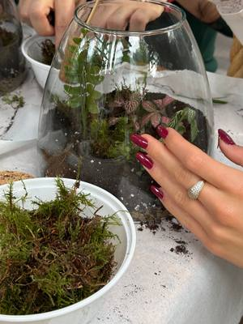

Plant and flower workshops in Turin and around
Flower arranging, terrarium, vegetable garden and plant workshops in Turin and around.
Search all workshops19 activities coming up · updated on 30 October 2026
 sat31octPlantsMake your own terrarium: plants under glassSaturday 31 October, 16:00–18:00San Salvario (TO) · 45 €with Erica Selvatica at El Chill Garden
sat31octPlantsMake your own terrarium: plants under glassSaturday 31 October, 16:00–18:00San Salvario (TO) · 45 €with Erica Selvatica at El Chill Garden sat7novPlantsCut flowers: bulbs and wreathsSaturday 7 November, 10:00–17:00Mirafiori (TO) · 100 €with Orti Generali
sat7novPlantsCut flowers: bulbs and wreathsSaturday 7 November, 10:00–17:00Mirafiori (TO) · 100 €with Orti Generali sat7novPlantsFlowers for breakfast: a spiral bouquetSaturday 7 November, 11:00–12:00Turin · 55 € · sold outwith Bottega Botanica
sat7novPlantsFlowers for breakfast: a spiral bouquetSaturday 7 November, 11:00–12:00Turin · 55 € · sold outwith Bottega Botanica sun8novPlantsWild herbs: how to spot and use themSunday 8 November, 14:30–17:00Mirafiori (TO) · 30 €with Orti Generali
sun8novPlantsWild herbs: how to spot and use themSunday 8 November, 14:30–17:00Mirafiori (TO) · 30 €with Orti Generali thu12novPlantsKokedama workshop: a Japanese moss ballThursday 12 November, 18:30Turin · 35 €with Bottega Botanica
thu12novPlantsKokedama workshop: a Japanese moss ballThursday 12 November, 18:30Turin · 35 €with Bottega Botanica- thu19novPlantsKokedama workshop: a Japanese moss ballThursday 19 November, 18:30Turin · 35 € · sold outwith Bottega Botanica
 sat21novCeramicsTillandsia: hanging ceramic plantersSaturday 21 November, 16:00–18:00San Salvario (TO) · 48 €with Pottery Lab
sat21novCeramicsTillandsia: hanging ceramic plantersSaturday 21 November, 16:00–18:00San Salvario (TO) · 48 €with Pottery Lab
sun22novPlantsTropical terrarium: an ecosystem in glassSunday 22 November, 09:30Aurora (TO) · 39 €with BAO NOW fri27novPlantsWild Workshop: a fir wreathFriday 27 November, 18:15–20:15Villar Perosa (TO) · 60 €with Selva Domestica at Riflessi di Casa
fri27novPlantsWild Workshop: a fir wreathFriday 27 November, 18:15–20:15Villar Perosa (TO) · 60 €with Selva Domestica at Riflessi di Casa sat28novPlantsChristmas wreaths: fir and conifersSaturday 28 November, 10:00–12:30Cuneo (CN) · 65 €with Francesca Maina at Atelier Crea-Arti
sat28novPlantsChristmas wreaths: fir and conifersSaturday 28 November, 10:00–12:30Cuneo (CN) · 65 €with Francesca Maina at Atelier Crea-Arti- sat28novPlantsKokedama workshop: a Japanese moss ballSaturday 28 November, 11:00Turin · 35 €with Bottega Botanica
 thu3decPlantsWreath workshop: a Christmas centrepieceThursday 3 December, 18:30–20:00Turin · 55 € · sold outwith Bottega Botanica
thu3decPlantsWreath workshop: a Christmas centrepieceThursday 3 December, 18:30–20:00Turin · 55 € · sold outwith Bottega Botanica- fri4decPlantsWreath workshop: a Christmas centrepieceFriday 4 December, 18:30–20:00Turin · 55 €with Bottega Botanica
- sat5decPlantsWreath workshop: a Christmas centrepieceSaturday 5 December, 11:00–12:30Turin · 55 €with Bottega Botanica
- thu28janPlantsKokedama workshop: a Japanese moss ballThursday 28 January, 18:30Turin · 35 €with Bottega Botanica
 thu18febPlantsFloral cloche workshop: a garden under glassThursday 18 February, 18:30–19:30Turin · 60 €with Bottega Botanica
thu18febPlantsFloral cloche workshop: a garden under glassThursday 18 February, 18:30–19:30Turin · 60 €with Bottega Botanica thu25febPlantsWreath workshop: fresh eucalyptusThursday 25 February, 18:30Turin · 45 €with Bottega Botanica
thu25febPlantsWreath workshop: fresh eucalyptusThursday 25 February, 18:30Turin · 45 €with Bottega Botanica- sat27febPlantsFlowers for breakfast: a spiral bouquetSaturday 27 February, 11:00–12:00Turin · 55 €with Bottega Botanica
 thu11marPlantsNatural incense workshop: smudge sticksThursday 11 March, 18:30Turin · 30 €with Bottega Botanica
thu11marPlantsNatural incense workshop: smudge sticksThursday 11 March, 18:30Turin · 30 €with Bottega Botanica